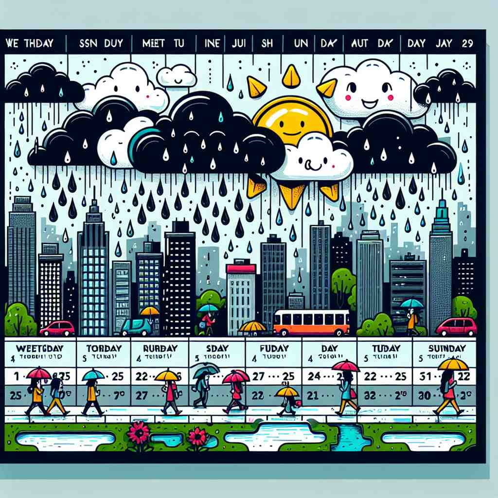
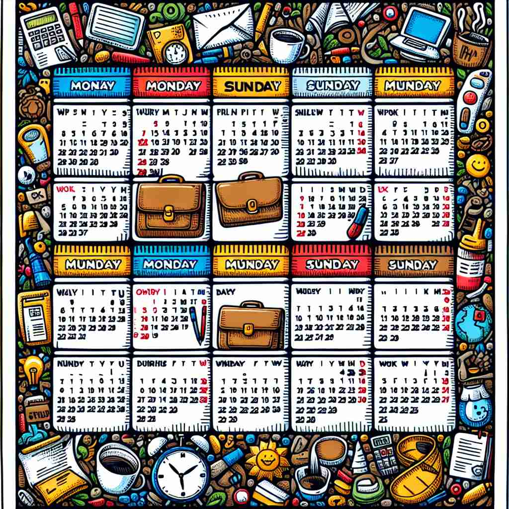

💬 The students are excited about what they will learn this week.

💬 This week is busy with many activities.

💬 This week will have a lot of rain and sunshine.

💬 This week, I have many meetings to attend.
🔈 [wiːk]
🗝️ n. a period of seven days
🖼️ 想象一下，一个忙碌的家庭计划一周的活动。从星期一开始，家长们为孩子准备午餐，星期二晚上有足球训练，周三是全家电影之夜，周末全家出游。这形象地展示了'week'是一个持续七天的时间段。
🔍 记忆'week'的关键在于牢记其核心含义：七天的周期。所有衍生含义都围绕这个七天周期展开，或是从中提取工作日，或是将其作为时间单位，或是用于特定事件。想象一个由七个格子组成的日历，这就是'week'的基本概念，帮助你联想和记忆它的各种用法。
💬 The students are excited about what they will learn this week.
💬 This week is busy with many activities.
💬 This week will have a lot of rain and sunshine.
💬 This week, I have many meetings to attend.
🌳 这个词直接来源于古英语，相关词根为 'wic'，意为 '一组'。现代英语中表示 '一周'，即连续七天的时间段。
💡 可以将 'week' 联想为积累七天的一组，每当度过一组（week），就又迎来了新的一个开始。
🗝️ n. the period from Monday to Friday when people usually work
🖼️ 在一个现代化的办公室中，员工们从星期一到星期五忙碌地工作，进行各类会议和项目任务。每个人都期待着周五下午，因为这标志着工作周的结束。这个场景展示了'week'作为工作日，也就是从周一到周五的含义。
💬 I work five days a week.
❓ 从七天周期中提取出工作日
🗝️ n. seven days considered as a unit of time in a calendar
🖼️ 在教室里，老师正在讲解日历。她指着一个月的四个部分，每一部分用不同颜色标记，解释道：'这是一个月的四周，每周都是日历中的基本单位。'这个场景突出'week'在日历中作为时间单位的概念。
💬 The festival starts next week.
❓ 将七天作为日历中的一个时间单位
🗝️ n. a period of seven days for a particular purpose or event
🖼️ 在城市的广场上，年度的食品节即将开幕，持续一周。所有美食摊位和活动都安排在这七天内，为市民带来味觉盛宴。这是'week'用来描述某个特定目的或活动的时间段的例子。
💬 Fashion Week is held twice a year in Paris.
❓ 将七天周期应用于特定目的或事件
🗝️ n. the time between one day of the week and the same day the following week
🖼️ 想象一个篮球教练告诉他的队员：'从今天开始的这个星期，你们每天都要练习。'他们将在下个星期同一天回来看看自己的进步。这展示了'week'作为从某一天到下周同一天之间的时间跨度。
💬 I'll see you this day week.
❓ 以特定日期为基准的七天周期